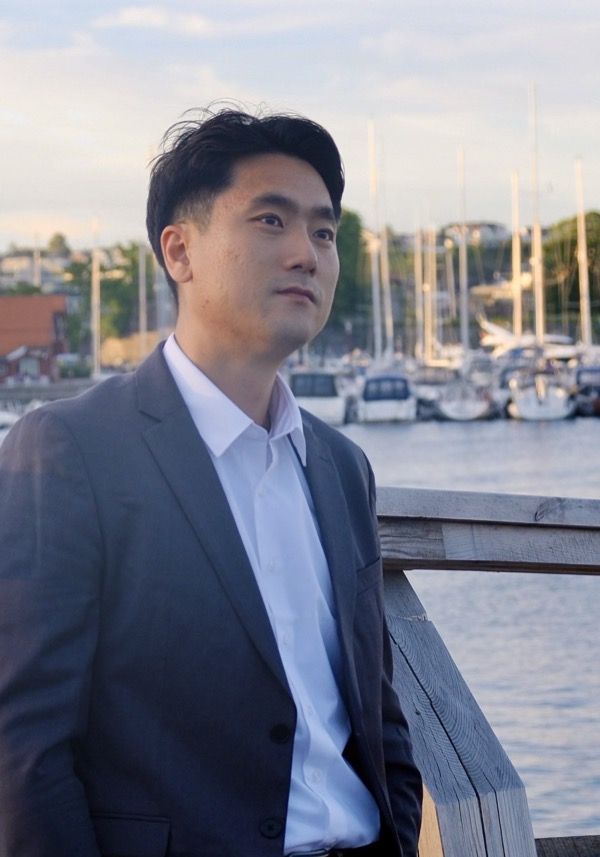

PhD Candidate in Financial Economics · University of Groningen
Visiting PhD Researcher, Fudan University (FISF) (Oct 2026 – Jan 2027)
d.yan@rug.nl · WeChat: dyanracer · CV · LinkedIn · Google Scholar · ORCID

I am a PhD candidate in Financial Economics at the Faculty of Economics and Business, University of Groningen, supervised by Prof. Dr. Abe de Jong and Dr. Halit Gonenc. My dissertation focuses on corporate finance, studying spillover effects that arise from interactions among firms, drawing on evidence from both domestic Chinese and international markets. From October 2026 to January 2027, I will be a visiting PhD researcher at Fudan University (FISF).
Before my PhD, I obtained a Master of Business and Economics from KU Leuven (Belgium) and a Bachelor of Science in Business Administration from Murray State University (USA).
State-owned Enterprises Spillover under Imperfect Competition
Revise & Resubmit, Journal of Corporate Finance. Presented at EFMA (2025), AFS (2025), and IBEC (2026).
Abstract
State intervention provides firms with competitive advantages, which suppresses rival investment. Although prior research documents crowding-out effects under stable conditions, little is known about how competitive spillovers respond to institutional change. We study such a change using China's 2016 supply-side structural reform. This reform provides quasi-experimental variation in exposure to shifts in state-owned enterprises' (SOEs') expansion capacity. We use cross-industry differences in pre-reform SOE prevalence as a measure of exposure and implement a difference-in-differences design to identify the causal effect of reform-induced changes in competitive conditions on investment of privately owned enterprises (POEs). After the reform, we find a divergent trend in the relative capital expenditure levels of POEs across industries with high versus low SOE prevalence. We show that these effects are driven by changes in competitive pressure from SOEs rather than changes in financing channels. These spillover effects are also more pronounced for POEs that are not politically connected.
Spillover Effects from Peers in Local Markets and International Acquisitions: Evidence from China
Presented at the EFMA Doctoral Session (2026).
How Firms' Pre-Covid Characteristics Affect Trade Credit Usage During the Covid-19 Crisis
Ad hoc reviewer (with Prof. Dr. Abe de Jong and Dr. Halit Gonenc) for:
A full CV is available here (PDF).
Email: d.yan@rug.nl
WeChat: dyanracer
Faculty of Economics and Business, University of Groningen
Groningen, the Netherlands